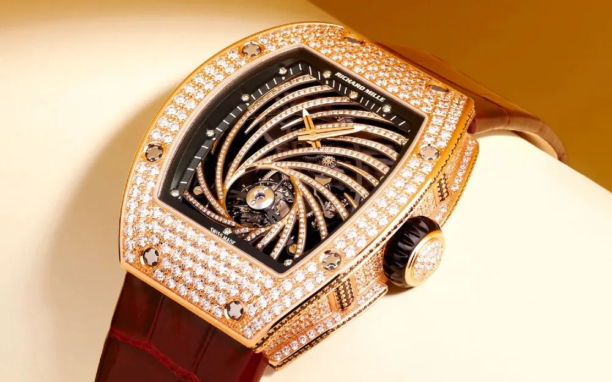
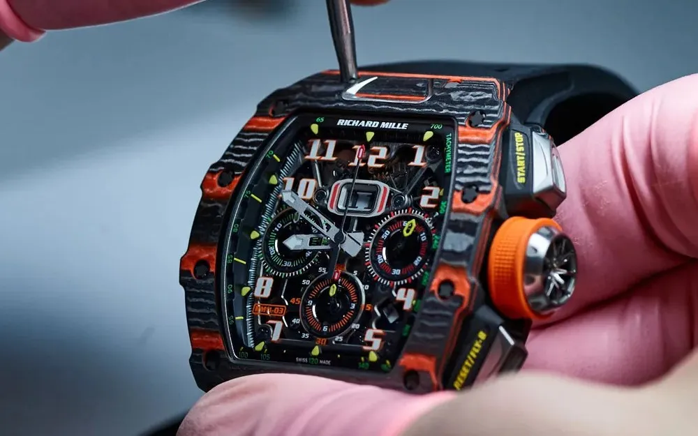

Richard Mille Mancini RM 11-04
Une montre mécanique avec un cadran spécifique permettant de chronométrer mi-temps, temps additionnels et prolongations

Diamond RM 51-02
Une montre Richard Mille dédiée aux femmes mettant en scène une spirale, expression de ce que l’on nomme le « nombre d’or » ou la « divine proportion »

MacLaren RM 11-03
Le chronographe Flyback Automatique McLaren RM 11-03 présenté en 2018 est limité à 500 pièces dans le monde, pièces réservées aux clients McLaren possédant un véhicule Ultimate Series